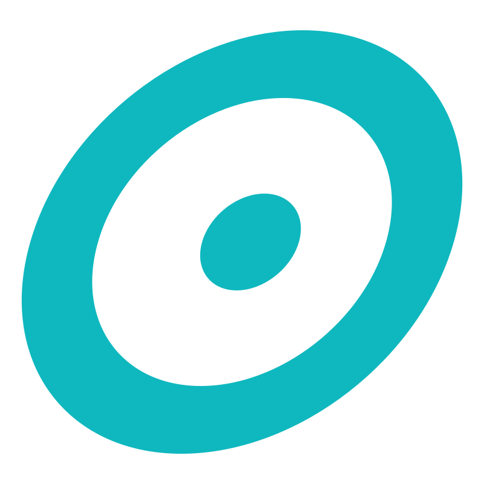
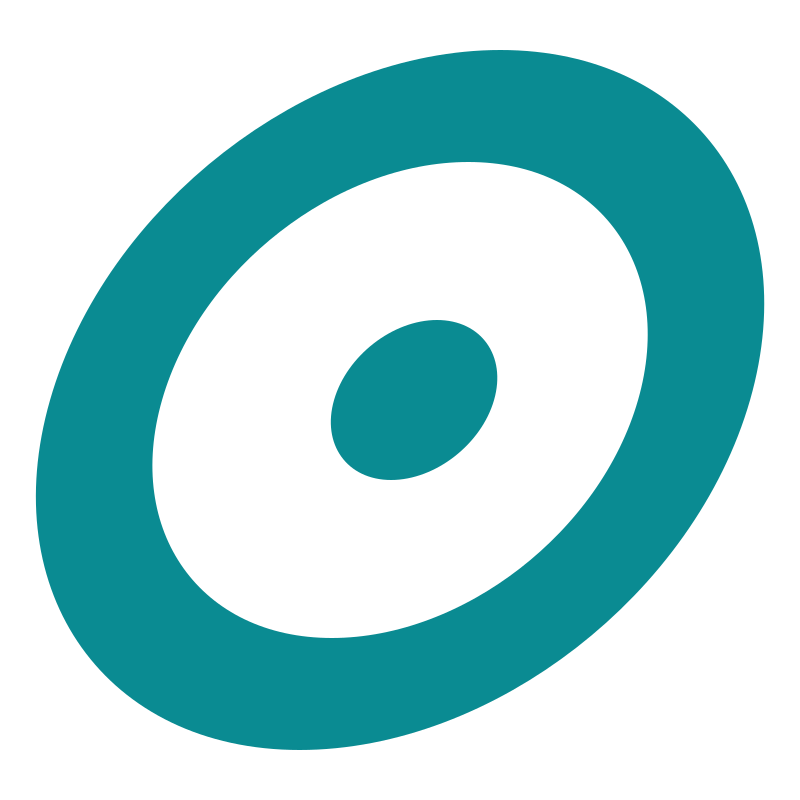
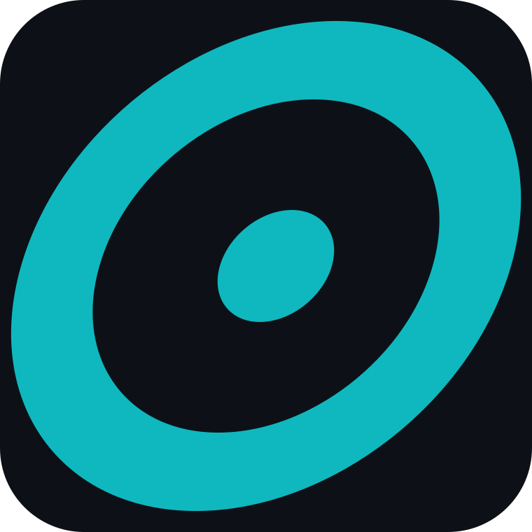

Everything that has actually been decided — the lockup, the palette with its measured contrast, and the type scale as the app really sets it. If it isn't on this page, it isn't decided yet.
The lockup is outlined paths, so it needs no webfont, and the two colours are CSS variables — one copy of the markup serves both grounds. Below ~24px tall the pulse line under the letters stops resolving; use the mark alone instead of shrinking further.


Cut from the lockup's own geometry — the ring is circle(2356, 350) r294
stroke112 and the dot circle(2370, 350) r80, both inside the
skewX(-16) group that gives the mark its lean. It is the same shape
as the letter O, not a redrawing of it.

Favicontighter paddingKeep clear on all sides by the height of the ring. Nothing crops into it.
Dark grounds take the cream letters and the bright teal; light grounds take the
near-black letters and the deep teal. Over the beam gradient and the deep teal
surface the signal steps up to --so-beam so it stays legible against
a ground that is already teal.
The lockup holds to about 24px tall. Below that the pulse line closes up and stops reading as a trace, so the mark takes over — and because the mark is cut from the lockup's own geometry, that swap keeps the same shape on screen rather than introducing a second one.
One hue, two values. A colour reads heavier on a light ground and lighter on a dark one, so each ground gets the value that keeps the mark's perceived weight constant. They are not interchangeable, and neither is a substitute for the other in code.
Signal
Grounds & ink
Race state — kept separate from the signal
#0FB8BF on cream is too light to hold; #0A8B92 on void goes muddy.Three faces, one job each. The condensed display face is the language of race bibs, course signage and timing boards — it belongs to the sport rather than to a template. The wordmark's letterforms are outlines, so the logo is independent of all three.
Estimated split — GPS watch lost signal near mile 35; arrivals interpolated between Kaymoor Miners and the official finish.
The app is read one-handed, outdoors, by someone who has been awake since four in the morning. That is the whole brief.
The lockup is one piece of artwork with two colour variables. Everything below breaks something that the rest of this page depends on — the perceived weight, the geometry, or the contrast that keeps it readable at an aid station.
--so-wm-size, which only ever scales both axes together..so-on-light and the component picks the right pair itself.#0A8B92 goes muddy on void and the near-black letters disappear. The two are never interchangeable.
tokens.css is the source of truth and prefixes everything with
--so-. lib/race-theme.css carries the same values
unprefixed (--signal, --beam, --text) for the
app's own components — when you are writing app CSS, reach for the unprefixed name.
| Token | Value | Where it is used |
|---|---|---|
| --so-signal-on-dark | #0FB8BF | Wordmark, controls and status chrome on dark |
| --so-signal-on-light | #0A8B92 | Wordmark and CTAs on cream / white |
| --so-beam | #5EFDF6 | Glow only — hover, focus rings, the one live figure |
| --so-ink-on-dark | #F0ECE3 | Letterforms and body copy on dark |
| --so-wm-letter-on-light | #0D1117 | Letterforms on light, as drawn |
| --so-ink-on-light | #121A1F | Body copy on light — a half-step warmer than the letters |
| --so-void | #0A0F14 | App ground |
| --so-panel | #121820 | Raised surface |
| --so-line | #253340 | Hairlines on dark |
| --so-cream | #F5F2EA | Light ground — print, marketing |
| --so-deep | #0A5F68 | Solid teal surface |
| --so-icon-tile | #0D1117 | Favicon / app-icon tile, as drawn |
| --so-wm-size | 30px in headers | Sets lockup height; width follows at 2.81:1 |
The two ground presets — .so-on-dark and .so-on-light — set
--so-ink and --so-signal for whatever sits inside them, so the
wordmark component picks up the right pair without being told which ground it is on.
| File | Use |
|---|---|
| sendoffprimaryonDark.svg | Source artwork — full lockup, dark grounds |
| sendoffprimaryonLight.svg | Source artwork — full lockup, light grounds |
| sendoff-wordmark.svg | The lockup with both colours as CSS variables — one file, either ground |
| sendoff-icon.svg | Mark alone, recolourable |
| sendoff-icon-dark-bg.svg | Mark in bright teal |
| sendoff-icon-light-bg.svg | Mark in deep teal |
| sendoff-icon-tile.svg | Mark on a rounded dark tile — app icon, avatar |
| sendoff-favicon.svg | Tile with tighter padding, browser tab |
| tokens.css | Colour and type tokens, ground presets, wordmark component |
| apple-touch-icon.png | Home-screen icon, iOS — 180×180 |
| icon-192.png | Manifest icon — 192×192 |
| icon-512.png | Manifest icon — 512×512 |
| icon-maskable-512.png | Maskable icon, inset clear of Android's crop |
| favicon-32.png | PNG favicon for contexts that ignore SVG |
| favicon-16.png | PNG favicon, small |
| og-default.png | Default social card — 1200×630 |
lib/race-theme.css carries the app's own copy of these values in its
:root. Change one, mirror the other, and bump the ?v= on
every page's stylesheet link.
{kind=link}
{kind=link}
{kind=link}
{kind=link}
{kind=link}
{kind=link}
{kind=link}
{kind=link}
{kind=link}
{kind=link}
{kind=link}
{kind=link}
{kind=link}
{kind=link}
{kind=link}